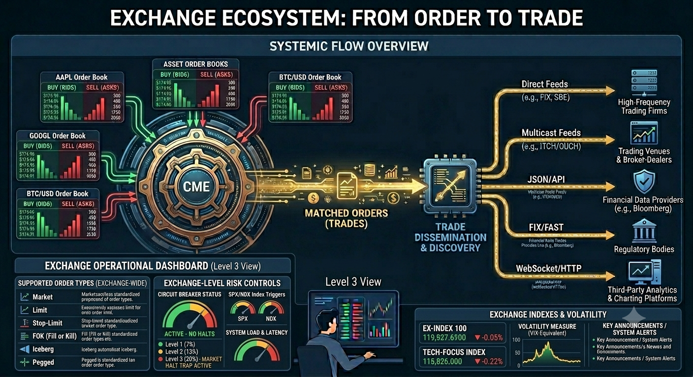

EduMatcher, Educational Trading System¶
EduMatcher is a multi-process Python trading simulator for learning how exchanges work in practice. It helps you build intuition for order matching, market microstructure, and exchange architecture through a runnable system.

Figure 1: The Exchange with Order Books and the Central Matching Engine (CME).Start Here¶
If you are new to exchanges, start with:
- How an Exchange Works. This is a rather large book so for the first you should restrict the reading to Part I & II. The rest can be saved for when you need it.
- Getting Started. This will help you install EduMatcher.
- The Order Book. It cannot be overstated how important it is to thoroughly understand the concept of the Order Book
- Your First Trade. Getting your feet wet before you run the exchange
If you are already familiar with trading, use this quick routing table:
| If you are... | Read this first | Then continue with |
|---|---|---|
| Hands-on user / instructor | Getting Started | Configuration -> Running the Engine -> Processes |
| Developer extending the system | Architecture Overview | Architecture Walkthrough -> Messages -> Developer Info |
| Protocol reader | Protocol Overview | Choose protocol appendix and examples from there |
flowchart TD
A[New Reader] --> B{New to exchange concepts?}
B -->|Yes| C[How an Exchange Works]
B -->|No| D[Getting Started]
C --> D
D --> E{Goal?}
E -->|Run first session| F[Running the Engine]
E -->|Understand mechanics| G[Concepts]
E -->|Operate a class demo| H[Processes + Scheduling]
E -->|Integrate protocols| I[Protocol Overview]Next step: Open Getting Started and pick either VM bootstrap or pipx install mode.
What This System Models¶
In a real exchange, buy and sell orders meet in an order book managed by a matching engine. EduMatcher reproduces that stack as separate processes communicating over a message bus, with all key behavior visible for learning and experimentation.
flowchart TD
GW1[Your terminal<br/>pm-gateway]
ENG[Matching engine<br/>pm-engine]
GW2[Other participants<br/>other pm-gateways]
VIEW[pm-viewer<br/>live order book]
CLR[pm-clearing<br/>P&L accounting]
AUD[pm-audit<br/>full event log]
GW1 --> ENG
GW2 --> ENG
ENG -->|broadcasts trades and fills| VIEW
ENG -->|broadcasts trades and fills| CLR
ENG -->|broadcasts trades and fills| AUDA trade occurs when orders cross, and matching follows price-time priority. Better prices execute first; at the same price, earlier orders execute first.
Next step: Read The Order Book to connect this model to concrete matching behavior.
Reading Path (Beginner-Friendly)¶
- How an Exchange Works
- Getting Started
- The Order Book
- Your First Trade
- P&L and Clearing
- A Full Trading Day
Next step: Complete steps 1 to 4 first, then run a session and return for steps 5 and 6.
Quick Start (Minimal)¶
For full setup details, see Getting Started.
Prerequisites¶
- Python 3.13+
- Either pipx (recommended for students/instructors) or Poetry (developer mode)
Install¶
Option 1: VM bootstrap mode (curl + Multipass)
curl -fsSL https://raw.githubusercontent.com/johan162/EduMatcher/main/vm/curl_setup_vm.sh | bash -s -- --version 0.12.4 --snapshot
More details: - Getting Started - VM runtime image
Option 2: Installed mode (pipx)
Run a minimal session¶
Open five terminals and run one process in each:
If you use Poetry, prefix commands with poetry run.
GW01 must exist under gateways.alf in engine_config.yaml.
Next step: Continue with Running the Engine for full process orchestration and troubleshooting.
Self Paced Training¶
The Training Manual is a chapter-based, self-paced track for hands-on learning. It complements the User Guide by turning concepts into guided exercises that you can run step by step.
If you want direct entry points, start with:
Next step: Use Training Index as your checklist and cross-reference each chapter with the matching User Guide section.